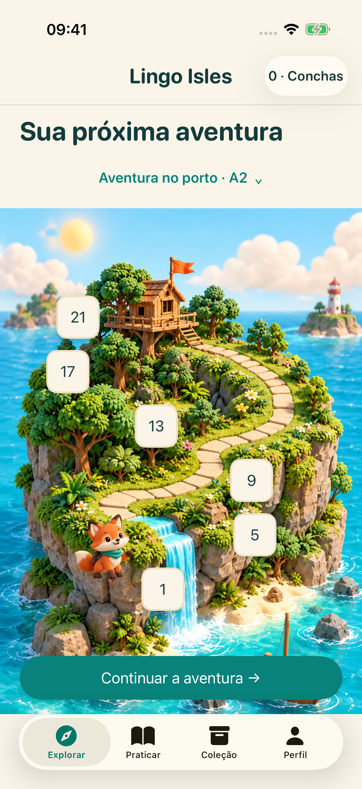
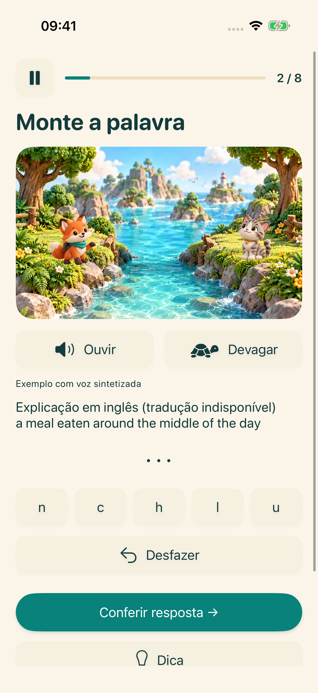
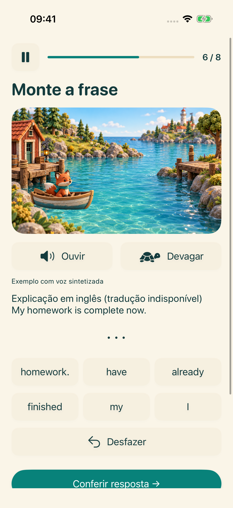
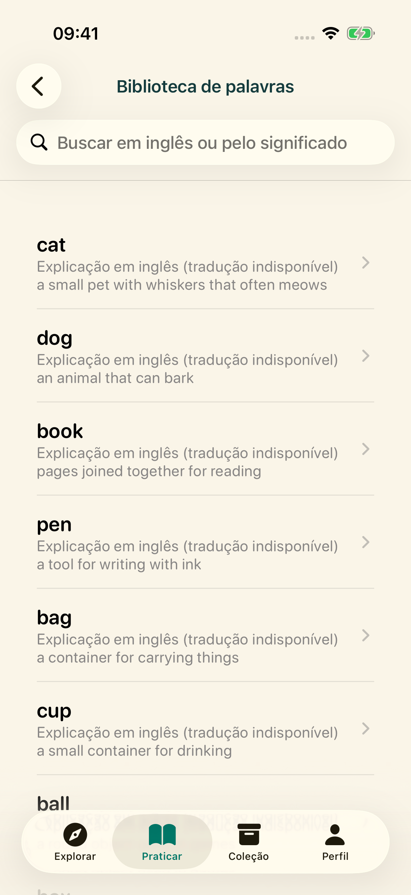

Sua próxima ilha espera por você
Escolha sua etapa de aprendizado e siga uma trilha de exercícios curtos de inglês.
Explore quatro ilhas de aprendizado. Ouça, monte palavras, organize frases e experimente sua voz: uma pequena descoberta de cada vez.
Explore a aventuraLançamento no iPhone e iPad em preparação


Escolha sua etapa de aprendizado e siga uma trilha de exercícios curtos de inglês.

Ouça a voz do sistema e organize as letras para praticar a ortografia em inglês.

Coloque as palavras em ordem e descubra como as frases em inglês se encaixam.

Explore a biblioteca de palavras, salve favoritos e reveja o que aprendeu.

Grave, ouça e tente de novo. A transcrição opcional no próprio dispositivo está disponível em aparelhos compatíveis. É uma prática, sem nota de pronúncia.
A interface oferece 16 idiomas. As explicações de aprendizado estão disponíveis em inglês e chinês simplificado; nos outros idiomas, quando não há tradução, são usadas explicações em inglês claramente identificadas.
O conteúdo de aprendizado e o progresso ficam no seu dispositivo. Não é necessário ter conta nem sincronização na nuvem operada pelo desenvolvedor. Os recursos de voz dependem do dispositivo; os serviços de publicidade e privacidade precisam de conexão de rede.
Perfis com menos de 18 anos ou sem faixa etária não iniciam o fluxo de publicidade. Para adultos, os anúncios dependem das escolhas de privacidade e da disponibilidade. Assistir a anúncios com recompensa é opcional.